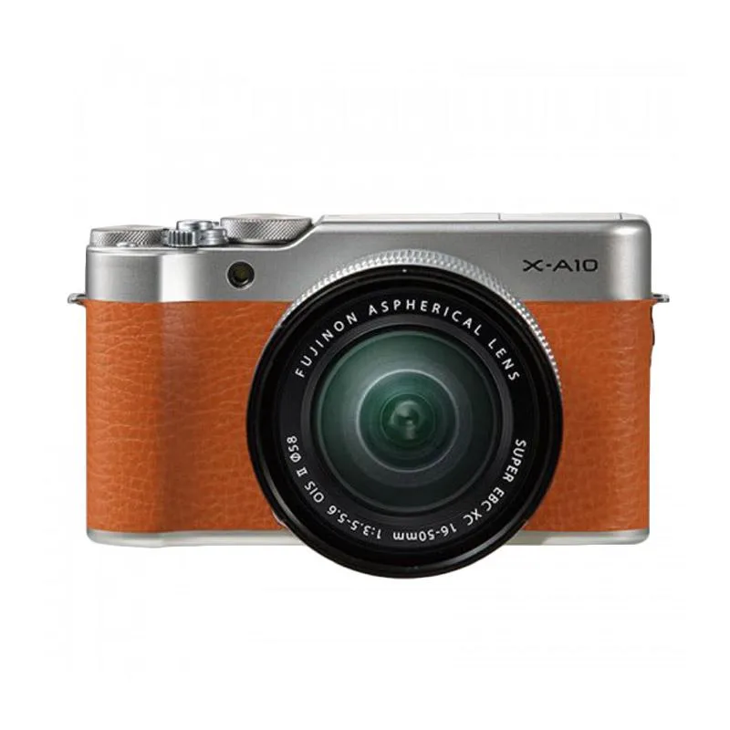

Canon
Apakah Anda baru mulai belajar fotografi atau masih beginner? Jika iya, EOS 1300D merupakan pilihan yang paling cocok.
Produk ini sudah dibekali dengan fitur mumpuni yang bisa menghasilkan gambar terbaik. Selain itu, tersedia juga pengaturan otomatis yang bisa membantu Anda dalam mengambil gambar.
Pengaturan tersebut adalah Scene Intelligent Auto. Fitur ini membantu pengaturan kamera sesuai dengan kondisi pemotretan secara otomatis.
Bobot produknya sangat ringan, yakni sekitar 485 gram saja. Dengan begini, kamera Canon kecil ini tidak akan membuat Anda mudah capek meski dipakai untuk tarvelling atau liburan.
Sistem koneksi yang digunakan 1300D ini cukup lengkap, di antaranya adalah GPS, WiFi, dan Hi-Speed USB. Keberadaan konektivitas ini akan mempermudah Anda dalam mengoneksikannya dengan beragam perangkat seperti gadget atau gawai.
Untuk menghasilkan gambar terbaik, produknya dibekali dengan sensor kamera CMOS 18 MP APS-C. Sedangkan lensa tambahannya adalah EF-S 18-55 mm f/3,5 – 5,6 IS. Sensitivitas ISO-nya mulai dari 100 sampai 6.400. Sementara continous shot-nya 3 fps.
harga mulai 3,5 jutaan rupiah.
Kamera Canon terbaik buat pemula berikutnya adalah 1500D. Ini merupakan salah satu produk entry level yang ditawarkan dengan harga cukup murah.
Produk ini sudah dilengkapi dengan lensa 18 - 55 mm. Sebuah lensa standar yang sudah bisa digunakan untuk berbagai jenis pemotretan.
Terdapat 9 titik sistem AF dengan ISO mulai dari 100 sampai 6.400 (H: 12.800). Produknya menggunakan kamera 24,1 MP APS-C . Hasil jepretan kameranya jelas bersih dan jernih.
Sembilan titik AF membuat titik fokus otomatisnya terganggu, khususnya saat harus bekerja di lokasi yang minim cahaya atau cahaya redup.
Meski begitu, kualitas kamera dengan resolusi terbaik tetap memberikan performa berkualitas. Saat dipakai untuk merekam video, hasilnya pun sudah full HD.
EOS 1500D ini dibekali dengan layar LCD namun belum touchscreen. Beratnya hanya 427 gram sehingga terasa ringan dan tidak akan bikin tangan cepat lelah saat memotret.
Intinya, jika Anda mencari produk dengan konektivitas lengkap dan harganya affordable, 1500D bisa jadi pilihan.
Dengan memakai produk ini, Anda bisa langsung membagikan momen indah ke media sosial dengan memanfaatkan Wifi.
Harga produknya berada di kisaran 7 jutaan rupiah.
 Para profesional atau pekerja kreatif berpengalaman tentu sudah tidak asing lagi dengan EOS-1D X Mark III.
Oleh Canon, produk ini diklaim sebagai kamera luar biasa yang mengubah dunia fotografi. Hal ini wajar mengingat hasil gambar dan videonya memang sangat bagus dan berkualitas.
Produk ini dikenal unggul di kelas kamera DSLR profesional. Berbagai macam fitur keren dimilikinya. Juga ada lensa kamera Canon terbaik yang siap memberikan hasil foto berkualitas tajam dan tinggi.
Dengan 1D-X, para profesional siap menciptakan mahakarya baru di dunia sinematografi dan fotografi.
Kualitas video yang dihasilkan oleh EOS-1D X Mark III ini sudah 4K dengan hasil yang mencengangkan. Saking bagusnya, ada yang bilang kualitasnya sudah di atas itu, yakni 5,5K. Khususnya pada 50 p sampai 60 p.
Kecepatan burst EOS-1D X Mark III sangat cepat. Ketika menggunakan viewfinder optik jumlah continous shot-nya sekitar 16 fps. Ketika dalam mode live view, continous shot-nya sekitar 20 fps. Super cepat.
Di samping itu, hasil gambarnya juga tidak dipengaruhi oleh ketersediaan cahaya. Mau cahaya banyak atau sedikit, performanya tetap mumpuni dan terbaik.
Keunggulan lain yang dimiliki oleh EOS-1D X Mark III ini adalah daya tahan baterai yang sangat lama sehingga bisa dipakai di luar ruangan tanpa rasa khawatir.
Paket penjualannya termasuk dua buah kartu CFExpress yang bisa digunakan sebagai kartu memori kamera Canon. Ini akan membantu kinerjanya agar burst shooting bisa dilakukan terus menerus tanpa adanya buffer.
Harga produknya mulai dari 120 jutaan rupiah.
Para profesional atau pekerja kreatif berpengalaman tentu sudah tidak asing lagi dengan EOS-1D X Mark III.
Oleh Canon, produk ini diklaim sebagai kamera luar biasa yang mengubah dunia fotografi. Hal ini wajar mengingat hasil gambar dan videonya memang sangat bagus dan berkualitas.
Produk ini dikenal unggul di kelas kamera DSLR profesional. Berbagai macam fitur keren dimilikinya. Juga ada lensa kamera Canon terbaik yang siap memberikan hasil foto berkualitas tajam dan tinggi.
Dengan 1D-X, para profesional siap menciptakan mahakarya baru di dunia sinematografi dan fotografi.
Kualitas video yang dihasilkan oleh EOS-1D X Mark III ini sudah 4K dengan hasil yang mencengangkan. Saking bagusnya, ada yang bilang kualitasnya sudah di atas itu, yakni 5,5K. Khususnya pada 50 p sampai 60 p.
Kecepatan burst EOS-1D X Mark III sangat cepat. Ketika menggunakan viewfinder optik jumlah continous shot-nya sekitar 16 fps. Ketika dalam mode live view, continous shot-nya sekitar 20 fps. Super cepat.
Di samping itu, hasil gambarnya juga tidak dipengaruhi oleh ketersediaan cahaya. Mau cahaya banyak atau sedikit, performanya tetap mumpuni dan terbaik.
Keunggulan lain yang dimiliki oleh EOS-1D X Mark III ini adalah daya tahan baterai yang sangat lama sehingga bisa dipakai di luar ruangan tanpa rasa khawatir.
Paket penjualannya termasuk dua buah kartu CFExpress yang bisa digunakan sebagai kartu memori kamera Canon. Ini akan membantu kinerjanya agar burst shooting bisa dilakukan terus menerus tanpa adanya buffer.
Harga produknya mulai dari 120 jutaan rupiah.
EOS 6D Mark II merupakan pilihan pas bila Anda sudah punya bekal tentang fotografi dan videografi serta punya pekerjaan sebagai vlogger.
Produk ini dilengkapi dengan LCD yang dapat diputar 360 derajat sehingga bisa digunakan untuk selfie atau mengambil video sendiri dari depan.
Bila dipasangkan dengan tripod terbaik, Anda bisa mengambil video sendiri tanpa bantuan orang lain menggunakan EOS 6D Mark II ini.
Daya tarik lain yang dimiliki oleh EOS 6D mark II adalah sudah full frame. Dibekali dengan kamera 26,2 MP sensor CMOS, produknya jelas bisa memberikan hasil foto terbaik juga video yang memukau.
Kameranya juga bisa bekerja stabil berkat sistem stabilisasi gambar 5 poros yang disematkan pada produknya.
Jika Anda senang menangkap gambar bergerak atau harus mengambil gambar cepat sambil bergerak, maka EOS 6D Mark II adalah solusi terbaik.
Sensitivitas ISO-nya berada di rentang 100 sampai 40.000 dengan expandable L: 50 dan H1 51.200 serta H2 102.400.
Jumlah continuous shot-nya adalah 6,5 frame per detik.
Lensa tambahan yang dimiliki produk ini adalah EF 24 – 105 mm dengan f/4L IS II USM.
Berat produknya lebih dari 700 gram. Meski begitu, produknya tetap layak dibeli karena koneksinya lengkap. Ada USB, Wifi, Bluetooth, NFC, dan GPS.
Harga kamera Canon terbaik 6D mark II ini mulai dari 31 jutaan rupiah.
Berbeda dengan 90D yang didesain buat pemakaian outdoor atau untuk yang bekerja di lapangan, EOS 5D ini cocok buat segala bidang. Tentu saja, pemakaiannya lebih ke profesional, bukan beginner atau entry level.
Anda bisa menggunakan kamera ini untuk memotret momen sehari-hari, bikin konten, atau bahkan membuat film profesional.
5D dibekali dengan resolusi kamera 30,4 MP yang sudah ada sensor CMOS full frame dan dual pixel CMOS AF.
AF yang disematkan pada produk ini memiliki kecepatan yang sangat tinggi dengan tingkat presisi yang sangat baik.
Produk ini tidak hanya bisa dipakai untuk memotret, tetapi juga menghasilkan rekaman video dengan resolusi 4K. Cocok buat fotografer sekaligus videografer.
Selain bisa buat pribadi, resolusi video ini juga sangat cocok digunakan untuk pemakaian profesional, yakni pembuatan film.
Hasil jepretan kameranya juga bagus sehingga fotografer berpengalaman bisa menuangkan ide kreatifnya dengan sempurna melalui alat ini.
Jangankan siang hari saat ketersediaan cahaya melimpah, saat cahaya redup atau malam hari pun hasil gambarnya tetap bagus dan tajam.
EOS 5D ini memang memiliki kekuatan di hasil jepretan kamera dan rekaman video. Pengaturannya dilakukan secara manual sesuai kebutuhan oleh para profesional.
Harga kamera Canon terbaru ini mulai dari 55 jutaan rupiah.
Sony
Kamera Digital Mirrorless Sony Alpha a6000 adalah kamera mirrorless serbaguna dan canggih yang menampilkan sensor Exmor APS HD CMOS berukuran APS-C 24,
3MP dan prosesor gambar BIONZ X untuk menghasilkan gambar diam resolusi tinggi dan film Full HD dengan cahaya redup yang ditandai kualitas dan sensitivitas terhadap ISO 25600. Di luar ciri pencitraan yang menonjol,
prosesor gambar juga cocok untuk pemotretan beruntun hingga 11 fps dan sistem Fast Hybrid AF cerdas yang menggunakan metode deteksi fase dan kontras untuk memperoleh fokus dengan cepat dan akurat.
Harga Kamera ini adalah mulai dari 7.5 jutaan rupiah.
Karena itu pula Sony menyasar kalangan vlogger dengan a6400. Dalam hal ini, kemampuan a6400 turut didukung perekaman video 4K, profil S-Log2 dan S-Slog3, slow-motion hingga 120 FPS di resolusi 1080p, serta autofokus yang diklaim terkencang di dunia dengan waktu penguncian fokus hanya 0,02 detik dan bisa mendeteksi wajah dan mata saat foto atau video. “Kami memberikan opsi yang sangat banyak untuk merealisasikan visi kreator masa kini,” ujar Vice President Imaging Solutions Sony, Neal Manowitz, dalam keterangan pers terkait a6400.
Jeroan a6400 sendiri masih mirip dengan model-model kamera mirrorless APS-C Sony sebelumnya. Kamera ini tetap mengandalkan sensor CMOS 24,2 dengan chip pengolah gambar Bionz X yang dapat memotret 11 foto perdetik dan 425 titik phase-detect AF. Sesuai dengan namanya yang seolah menempatkan sang kamera di antara a6300 dan a6500, kemampuan hardware a6400 bisa dibilang masih berada di bawah a6500. Sony a6400, misalnya, tidak dibekali dengan in-body image stabilizer (IBIS). Buffer memori a6400 pun hanya sanggup menampung 116 frame JPEG standard atau 46 frame RAW compressed dalam continuous shooting (hingga 11 FPS dengan full-tracking).
Harga Kamera ini adalah mulai dari 13 jutaan rupiah.
Sempurna untuk vlogger, Sony ZV-E10 memasangkan sensor APS-C besar dan keserbagunaan mirrorless dengan set fitur khusus yang dibuat hanya untuk pembuat konten. Meningkat pada smartphone yang ada di mana-mana, ZV-E10 adalah kamera Alpha yang menghadirkan kualitas gambar yang lebih baik, pilihan lensa yang lebih banyak, dan peningkatan kontrol untuk meningkatkan kreativitas Anda saat memotret.
Mengambil konsep yang berasal dari ZV-1, ZV-E10 adalah kelanjutan tanpa cermin dari ide kamera yang dibangun di sekitar konsep vlogging. Ini adalah kamera yang sangat mampu dan portabel tetapi menggabungkan serangkaian pilihan desain dan mode pemotretan yang ideal untuk produksi satu orang. Layar vari-angle memungkinkan Anda membingkai bidikan secara akurat, mikrofon terarah terintegrasi dibuat khusus untuk merekam suara yang lebih akurat dari subjek yang menghadap ke depan, dan mode pemotretan seperti Background Defocus dan Product Showcase membantu Anda menyorot subjek tertentu dengan mudah.
Dalam hal spesifikasi, ZV-E10 memiliki sensor 24.2MP APS-C Exmor CMOS, yang memungkinkan perekaman video UHD 4K hingga 30p, perekaman Full HD pada 120p, dan pengambilan gambar diam hingga 11 fps. Sensitivitas berkisar antara 100-32000 untuk bekerja dalam berbagai kondisi pencahayaan dan desain sensor juga mengintegrasikan sistem Fast Hybrid AF 425 titik untuk pelacakan dan deteksi subjek yang akurat.
Desain bodinya mengingatkan pada kamera Alpha E-mount Sony lainnya dan menampilkan tata letak kontrol intuitif bersama dengan LCD layar sentuh vari-angle 3.0" fungsional untuk kontrol dan pembingkaian pengaturan intuitif. Dengan audio menjadi perhatian utama vlogging dan konten kreatif, ZV-E10 berfokus pada aspek perekaman ini dengan memasukkan mikrofon pengarah 3-kapsul ke dalam desain kamera serta menggabungkan port mikrofon dan headphone 3,5mm dan memiliki sepatu Multi Antarmuka teratas yang mendukung antarmuka audio digital untuk meningkatkan kualitas audio.
Harga Kamera ini adalah mulai dari 12 jutaan rupiah.
 Sony Alpha A7II Body hadir dengan menawarkan penstabil gambar 5-axis SteadyShot INSIDE dengan 4.5 stops untuk mengatasi lima tipe dari pergerakan atau guncangan kamera yaitu pitch, yaw, horizontal shift, vertical shift, dan roll. Dengan hadirnya sistem penstabil gambar yang mumpuni ini, pengambilan gambar diam maupun gambar gerak dapat dilakukan dengan tenang dan nyaman. Penggunaan berbagai macam lensa bahkan lensa yang baru dapat kompatibel dengan Sony Alpha A7II Body melalui bantuan adapter untuk mendapatkan gambar langka dan unik pun dapat dilakukan dengan tingkat blur akibat goncangan kamera yang sangat kecil berkat sistem 5-axis SteadyShot INSIDE ini.
Sony Alpha A7II Body juga dilengkapi dengan sensor Exmor™ CMOS berkapasitas 24.3 megapiksel. Kapasitas sensor yang cukup besar memampukan perangkat keluaran brand produsen kamera terkemuka ini untuk menghasilkan gambar dengan resolusi dan detail yang sangat tinggi. Sistem Fast Hybrid Auto Focus yang dimiliki oleh seri Alpha A7II juga menjadi nilai tambah. Sistem yang menggabungkan 117 point phase-detector dengan 25 point contrast-detector ini mampu mencakup area fokus yang luas dalam proses pengambilan gambar. Dengan sistem ini fokus dari gambar diam maupun gambar gerak yang diambil menjadi sangat akurat. Kecepatan dalam mengambil fokus gambar pun sangat cepat dan tidak perlu diragukan lagi. Sistem Fast Hybrid Auto Focus yang dimiliki oleh perangkat ini juga dinilai untuk dapat bekerja 30% lebih unggul jika dibandingkan dengan generasi AF Sony sebelumnya.
Harga Kamera ini adalah mulai dari 12 jutaan rupiah.
Sony Alpha A7II Body hadir dengan menawarkan penstabil gambar 5-axis SteadyShot INSIDE dengan 4.5 stops untuk mengatasi lima tipe dari pergerakan atau guncangan kamera yaitu pitch, yaw, horizontal shift, vertical shift, dan roll. Dengan hadirnya sistem penstabil gambar yang mumpuni ini, pengambilan gambar diam maupun gambar gerak dapat dilakukan dengan tenang dan nyaman. Penggunaan berbagai macam lensa bahkan lensa yang baru dapat kompatibel dengan Sony Alpha A7II Body melalui bantuan adapter untuk mendapatkan gambar langka dan unik pun dapat dilakukan dengan tingkat blur akibat goncangan kamera yang sangat kecil berkat sistem 5-axis SteadyShot INSIDE ini.
Sony Alpha A7II Body juga dilengkapi dengan sensor Exmor™ CMOS berkapasitas 24.3 megapiksel. Kapasitas sensor yang cukup besar memampukan perangkat keluaran brand produsen kamera terkemuka ini untuk menghasilkan gambar dengan resolusi dan detail yang sangat tinggi. Sistem Fast Hybrid Auto Focus yang dimiliki oleh seri Alpha A7II juga menjadi nilai tambah. Sistem yang menggabungkan 117 point phase-detector dengan 25 point contrast-detector ini mampu mencakup area fokus yang luas dalam proses pengambilan gambar. Dengan sistem ini fokus dari gambar diam maupun gambar gerak yang diambil menjadi sangat akurat. Kecepatan dalam mengambil fokus gambar pun sangat cepat dan tidak perlu diragukan lagi. Sistem Fast Hybrid Auto Focus yang dimiliki oleh perangkat ini juga dinilai untuk dapat bekerja 30% lebih unggul jika dibandingkan dengan generasi AF Sony sebelumnya.
Harga Kamera ini adalah mulai dari 12 jutaan rupiah.
Sony A7 Mark III Body Only merupakan kamera mirrorlees serbaguna yang memiliki performa tinggi ditandai dengan tidak hanya resolusinya, tetapi juga oleh fleksibilitas multimedia. Full-frame 24.2MP Exmor R BSI CMOS sensor dan BIONZ X image processor yang diperbarui, a7R III memberikan impressive 10 fps continuous shooting rate bersama dengan peningkatan kinerja autofokus untuk pelacakan subjek yang lebih cepat dan lebih handal bersama dengan cakupan bingkai yang lebar. Sistem AF Cepat Hybrid yang diperbarui ini menggunakan kombinasi 399 phase-detection point dan 425 contrast-detection area untuk perolehan fokus yang lebih cepat dalam berbagai kondisi pencahayaan dan juga mempertahankan fokus pada subjek secara lebih efektif.
Selain speed dan AF, perbaikan proses juga membantu mewujudkan kejelasan gambar yang lebih besar di seluruh rentang sensitivitas dari ISO 100-32000, yang selanjutnya dapat diperluas ke ISO 50-102400. Kemampuan perekaman video juga telah diperpanjang untuk meningkatkan kualitas ketika merekam video UHD 4K dengan lebar penuh dari sensor full-frame, atau ketika menggunakan Super35 area dan 5K oversampling untuk meminimalkan moiré dan aliasing. Selain itu, manfaat baik stills dan operasi video, a7R III mempertahankan 5-axis SteadyShot INSIDE sensor-shift image stabilization, yang efektif untuk meminimalkan munculnya guncangan kamera hingga 5,5 stops.
24.2 MP Exmor R BSI CMOS Sensor and BIONZ X Image Processor
Menampilkan desain back-illuminated, full-frame 24.2-megapixel Exmor R CMOS sensor bekerja dengan BIONZ X image processor untuk menawarkan stills dan video resolusi tinggi sambil meminimalkan noise dan meningkatkan kecepatan. Struktur sensor ini bekerja dengan desain lensa on-chip tanpa celah dan anti-reflection coating, serta optical low-pass filter, untuk meningkatkan pengumpulan cahaya dan meningkatkan detail. Juga, copper wiring layer untuk meningkatkan kecepatan transmisi data guna menciptakan 14-bit, high-resolution 24.2-megapixel stills dengan rentang sensitivitas asli dari ISO 100-32000, yang dapat diperluas ke ISO 50-102400. Juga, memungkinkan perekaman video internal UHD 4K dengan rentang dinamis yang lebar menggunakan full width full-frame sensor. Prosesor BIONZ X juga bekerja bersama dengan LSI front-end berkecepatan tinggi untuk mewujudkan waktu pemrosesan yang lebih cepat bersama dengan kemampuan untuk menangkap rentang dinamis 15-stop yang mengesankan pada nilai sensitivitas rendah.
Kombinasi sensor dan prosesor juga menyediakan fast continuous shooting hingga 10 fps pada resolusi penuh, hingga 76 consecutive frames, dan dengan full-time AF / AE ketika bekerja dengan mechanical shutter atau electronic shutter. Jika memotret dalam mode live view, continuous shooting rate hingga 8 fps.
Harga Kamera ini adalah mulai dari 30 jutaan rupiah.
Fujifilm
Sebagai kamera Fujifilm terbaik, seri X100VI hadir dengan sensor CMOS 5 HR APS-C beresolusi 40,2 megapiksel, dilengkapi filter warna X-Trans.
Sensor ini menawarkan gambar tajam, detail, dan kaya warna, serta performa tinggi di berbagai kondisi cahaya.
Dukungan perekaman video mencakup 4K hingga 30 fps dan Full HD hingga 120 fps dengan kualitas yang impresif, didukung oleh X-Processor 5 tercanggih.
Harga Kamera ini adalah mulai dari 35 jutaan rupiah.
Fuji menawarkan salah satu produk andalannya dengan sensor 51,4MP, memberikan resolusi tinggi untuk gambar dan video.
Dukungan X-processor membuat hasilnya semakin menarik.
Rentang ISO tinggi hingga 102400 memungkinkan pengambilan gambar di kondisi minim cahaya.
Fitur auto fokusnya menjamin hasil foto yang tajam, yang hadir dengan desain minimalis dan ringkas, cocok untuk traveling.
Harga Kamera ini adalah mulai dari 55 jutaan rupiah.
Selanjutnya, ada X-Pro2 yang menawarkan fitur terbaru yang lebih canggih daripada versi sebelumnya, termasuk sensor 24 MP untuk foto dan video berkualitas tinggi.
Fokusnya sangat presisi, serta mampu menangkap objek bergerak dengan ketajaman maksimal.
Ditambah lagi, transisi data menjadi lebih mudah dengan Wi-Fi built-in, memungkinkan transfer file langsung ke smartphone tanpa perlu kabel data.
Harga Kamera ini adalah mulai dari 24 jutaan rupiah.
Generasi terbaru Fujifilm ini menampilkan sedikit perubahan pada tampilannya.
Kamera memiliki tuas fokus yang lebih dinamis dan sensor 24MP untuk hasil foto dan video yang lebih jernih.
Dilengkapi dengan dua slot kartu memori, fitur Wi-Fi, dan AF hybrid.
Kamera ini menawarkan ketajaman gambar yang tinggi dan sensitivitas ISO hingga 51200, membuatnya cocok untuk kondisi cahaya minim.
Harga Kamera ini adalah mulai dari 22 jutaan rupiah.

Kamera mirrorless X-A10 merupakan salah satu kamera Fuji yang melejit tinggi dipasaran kamera digital Indonesia.
Fujifilm merupakan salah satu pabrikan kamera yang berhasil dan sukses dalam menyaingi dan mengambil pasar kamera mirrorless di Indonesia.
Beberapa tahun terakhir ini, Fujifilm telah berhasil memenangkan beberapa persaingan di pasaran kamera mirrorles dengan meluncurkan X-T10 dan X-T1.
Disamping harganya yang cukup terjangkau, sebagian besar kamera Fujifilm telah dibekali dengan fitur-fitur yang berkualitas sehingga mampu menyaingi kamera DSLR dalam skala yang sama.
Harga Kamera ini adalah mulai dari 3,5 jutaan rupiah.